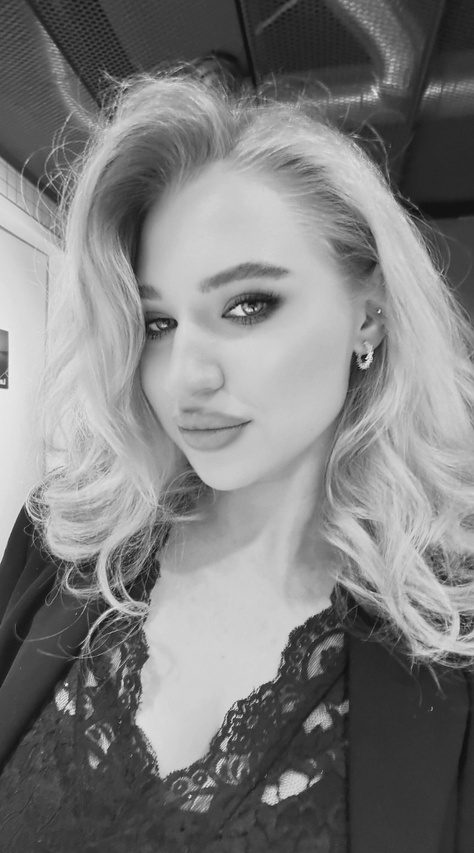

Wimpernlifting · Laminierung · Färben
Ihr Blick,
nur wacher.
Lash Lifting hebt Ihre eigenen Wimpern an – keine Verlängerung, keine Kleberschwere. Was bleibt, ist Ihr Blick: offener, klarer, morgens fertig, ohne dass jemand die Arbeit dahinter sieht.
- 2 Jahre
- Praxis im Lash Lifting
- 1 Fach
- Ausschließlich Wimpernlifting
- 6–8 Wochen
- hält das Ergebnis

- Liebe zum Detail
- Liebe zu schönen Ergebnissen
- Liebe zu meinen Kundinnen
Leistungen
Alles dreht sich um die Naturwimper
Ich arbeite ausschließlich mit Ihren eigenen Wimpern. Welche Technik, welcher Schild, wie lange die Einwirkzeit – das entscheidet Ihre Wimpernstruktur, nicht ein Standardablauf.
-
Wimpernlifting
ab 45 €Die Naturwimper wird sanft aufgerichtet und fixiert. Der Effekt wirkt wie ein geöffnetes Auge – ganz ohne Verlängerung.
-
Wimpernlifting & Färben
ab 55 €Lifting plus Farbe: Auch die hellen Spitzen werden sichtbar. Das Ergebnis sieht aus wie Mascara, die nicht verwischt.
-
Wimpernlaminierung mit Pflege
ab 60 €Lifting, Farbe und eine abschließende Keratinpflege. Für feine, strapazierte oder störrische Wimpern, die Halt brauchen.
-
Auffrischung
ab 40 €Für Stammkundinnen im Rhythmus von sechs bis acht Wochen, sobald die nachgewachsene Wimper den Ansatz gerade werden lässt.
-
Beratung & Wimpern-Check
kostenlosZwanzig Minuten, in denen wir Ihre Wimpernstruktur ansehen und besprechen, welches Ergebnis realistisch ist – ohne Behandlung.
Die Preise sind Ausgangspreise. Sehr dichte oder sehr lange Wimpern brauchen mehr Zeit – falls ein Aufschlag nötig ist, sage ich das vor der Behandlung, nie danach.
Ergebnisse
Arbeiten aus dem Behandlungsstuhl
Unretuschierte Aufnahmen direkt nach der Behandlung. Jede Wimper reagiert anders – deshalb zeige ich verschiedene Augen, nicht nur das eine schöne Beispiel.
Über mich
Ein Fach, richtig gelernt
Ich bin leidenschaftliche Lashlifting-Stylistin und beschäftige mich seit längerer Zeit intensiv mit Wimpernlifting und Wimpernlaminierung.
Aus der Arbeit mit vielen verschiedenen Kundinnen ist ein Gespür für unterschiedliche Wimpernstrukturen entstanden – und dafür, welche Technik zu welcher Wimper passt. Wichtig sind mir ein natürliches, sauberes und langanhaltendes Ergebnis und dass Ihre Wimpern die Behandlung gut überstehen.
Mein Schwerpunkt liegt ausschließlich auf Lash Lifting, nicht auf Wimpernverlängerung. Ich arbeite unter anderem mit BLACKWINGS Lash Lift Super Max Perm und bin offen für andere Produkte, wenn sie zur Wimper und zum Ergebnis passen. Zusätzlich beschäftige ich mich seit längerem mit Haarpflege und Haarbehandlungen, unter anderem mit Keratin und Botox – das schärft den Blick für Struktur und Aufbau.
- Präzises und sorgfältiges Arbeiten
- Liebe zum Detail
- Kreativität und ästhetisches Gespür
- Geduld und ruhiges Arbeiten
- Hygienisches und sauberes Arbeiten
- Einfühlungsvermögen und Verlässlichkeit
- Individuelle Anpassung an die Wimpernstruktur
- Offenheit für neue Techniken und Produkte
Ablauf
Was in den 60 Minuten passiert
-
01
Ansehen
Wir schauen uns Länge, Dichte und Wuchsrichtung an und legen die Schildgröße fest. Danach wissen Sie, wie das Ergebnis aussehen wird.
-
02
Vorbereiten
Reinigung, Schutz der unteren Wimpern, Aufsetzen des Silikonschilds. Ihre Augen bleiben die ganze Zeit geschlossen und geschützt.
-
03
Liften
Aufrichten, Fixieren, auf Wunsch Färben – jede Einwirkzeit wird an Ihre Wimpernstruktur angepasst und auf die Minute genau abgestoppt.
-
04
Pflegen
Zum Schluss Keratin- oder Ölpflege und die wichtigsten Hinweise für die ersten 24 Stunden. Danach ist der Blick fertig, morgens wie abends.
Termin
In drei Schritten zum Wunschtermin
Leistung wählen, Tag und Uhrzeit aussuchen, Kontaktdaten hinterlassen. Sie sehen nur Zeiten, die tatsächlich frei sind.
- 1 Leistung
- 2 Termin
- 3 Kontakt
Welche Behandlung darf es sein?
Unsicher? Wählen Sie die kostenlose Beratung – daraus wird bei Bedarf direkt ein Behandlungstermin.
Wann passt es Ihnen?
Grau hinterlegte Tage sind ausgebucht oder geschlossen. Die Zeiten gelten inklusive Vor- und Nachbereitung.
Wie erreiche ich Sie?
Die Anfrage ist noch keine Buchung: Sie bekommen von mir eine kurze Bestätigung, dann steht der Termin.
Fast geschafft
Ihre Anfrage steht bereit. Wählen Sie den Weg, der Ihnen lieber ist – über WhatsApp antworte ich meist am schnellsten.
Etwas dazwischengekommen? Sagen Sie bitte bis 24 Stunden vorher ab – per Telefon oder E-Mail. Dann kann jemand anderes den Platz bekommen.
Häufige Fragen
Bevor Sie im Stuhl liegen
Wie lange hält ein Lash Lifting?
In der Regel sechs bis acht Wochen. Danach ist so viel neue Wimper nachgewachsen, dass der Ansatz wieder gerade steht. Die geliftete Wimper fällt dabei ganz normal mit dem natürlichen Zyklus aus.
Was muss ich in den ersten 24 Stunden beachten?
24 Stunden kein Wasser, kein Dampf, keine Sauna, kein Schwimmbad und keine ölhaltige Pflege im Augenbereich. Danach dürfen Sie alles wieder wie gewohnt machen – auch Mascara, wenn Sie mögen.
Ist die Behandlung unangenehm?
Nein. Die Augen bleiben geschlossen, die untere Wimpernreihe wird abgedeckt, kein Produkt kommt ins Auge. Die meisten Kundinnen entspannen sich während der Einwirkzeit so sehr, dass sie kurz einschlafen.
Kommen meine Wimpern damit klar?
Wenn Einwirkzeit und Produkt zur Wimper passen: ja. Genau dafür schauen wir uns Ihre Wimpernstruktur vorher an. Bei sehr kurzen, frisch dauergewellten oder stark strapazierten Wimpern rate ich lieber ab, als ein schlechtes Ergebnis zu riskieren.
Wann sollte ich nicht kommen?
Bei Bindehautentzündung, offenen Stellen oder Reizungen am Lid, direkt nach einer Augenoperation und bei bekannten Allergien gegen Lifting-Produkte. In der Schwangerschaft und Stillzeit entscheiden Sie selbst – sprechen Sie im Zweifel vorher mit Ihrer Ärztin.
Kann ich Kontaktlinsen tragen?
Bitte nehmen Sie sie vor der Behandlung heraus und setzen Sie sie frühestens nach vier Stunden wieder ein. Eine Brille am Termintag ist die entspanntere Lösung.
Kontakt
Kommen Sie vorbei
Studio
Lash Studio Veronika
[Straße Hausnummer]
[PLZ Ort]
Öffnungszeiten
- Montaggeschlossen
- Dienstag – Freitag10 – 19 Uhr
- Samstag10 – 16 Uhr
- Sonntaggeschlossen